When RAG Meets Query Planning: Logical Query Trees for Resolving Exploratory Reasoning Problems
这篇论文来自复旦大学一作团队，合作机构还包括 United Automotive Electronic Systems 和武汉大学，arXiv 编号 2607.00508，论文入口是 arXiv:2607.00508。题目可以译作“当 RAG 遇到查询规划：用逻辑查询树解决探索式推理问题”。arXiv comments 标注为 Accepted by SIGMOD 2027；代码/项目页状态以 fact pack 为准，本轮只从论文文本看到匿名代码与数据链接线索，未独立核验公开仓库可访问性。
[toc]
RAG 在普通事实问答中可以靠一次检索或逐步改写补充证据，但在探索式推理问题里，实体关系本身是模糊、耦合和待发现的；如果系统没有端到端规划机制来先决定子查询依赖和执行顺序，检索噪声会在后续生成中持续放大，最终形成错误累积。
1. 背景和问题
PlanRAG 关注的不是传统 multi-hop QA 中那种已经显式写出路径的问题，而是论文称为 exploratory reasoning problems 的复杂查询。普通多跳问题通常可以被拆成“先找 A，再根据 A 找 B，最后回答 C”的顺序链条；ERP 更麻烦，问题里往往有多个候选实体、模糊时间约束、隐含关系和需要对齐的中间证据。用户问的是一个自然语言问题，但真正要做的更像数据库查询优化：先决定哪些原子条件应该被拆出来，再判断哪些条件可以并行、哪些条件必须依赖前一步结果，最后以较少噪声和较低成本完成检索与生成。
这正是现有 RAG 容易失效的地方。NaiveRAG 一次性检索会把大量不相关文档交给 LLM，模型不得不在噪声里猜测约束；iteration-based RAG 把问题逐步改写，但如果第一步选错实体或证据，错误会沿链路传播；graph-based RAG 比链式方法更结构化，但图的构造仍可能更多围绕文档或实体邻接，而不是围绕自然语言问题本身的执行计划。论文的关键判断是：ERP 的核心困难不是“缺一个更强检索器”这么简单，而是缺少一个在检索前显式规划子问题依赖、执行顺序和聚合方式的机制。
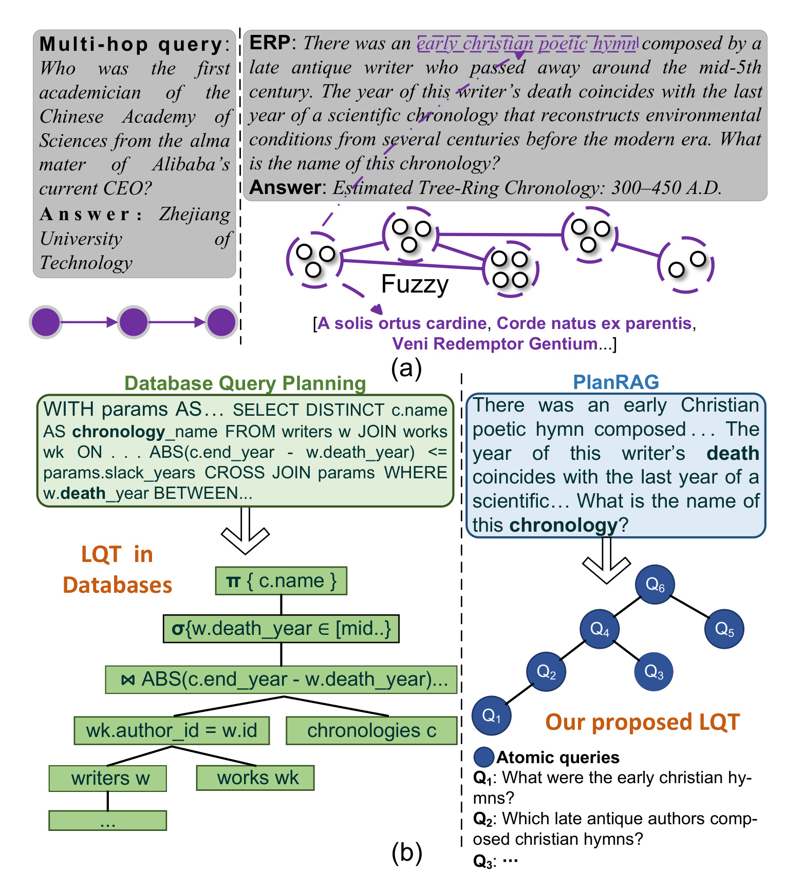
这张图把论文的任务边界说得很清楚。左上角的普通 multi-hop query 有单线条的推理路径，问题问“Alibaba 当前 CEO 的母校中第一位中国科学院院士是谁”，链条虽然长，但每一步实体关系相对明确。右上角 ERP 示例则先描述一个早期基督教诗歌、晚古代作者、5 世纪中叶死亡年份、科学年代学最后一年等模糊条件，系统必须同时发现候选 hymn、作者、死亡年份和 chronology，再把这些条件对齐。下半部分的类比更重要：数据库把 SQL 转成 logical query tree 后再优化执行；PlanRAG 试图把自然语言 ERP 也转成由 atomic queries 组成的 LQT。图里没有把 PlanRAG 说成万能推理器，而是把它定位成一个“先规划，再检索，再聚合”的结构化 RAG。
论文进一步指出，ERP 不只是概念上的难题，现有公开数据集中这类问题比例也偏低。因此作者构造 WikiWeb-ERP：总计 3,536 个 query 和 53,682 篇文档，其中 query 来自 BrowseComp、BrowseComp-Plus、BrowseComp Long Context、GAIA 的采样，以及 WebSailor 风格的生成扩展；文档来源包括 Wikipedia dump 和真实网页。这个设计说明论文试图把 ERP 做成一个可评测对象，而不是只展示几个精心挑选的案例。对推荐系统和搜索系统来说，这个问题也很接近实际：用户查询、内容理解、商品筛选和长尾意图经常不是单跳事实检索，而是多个约束条件、候选实体和排序目标共同作用。
我的理解是，PlanRAG 的价值在于把“RAG 该检索什么”前置成一个可优化结构。它不直接改 embedding，也不主要改生成模型，而是把检索前的 query planning 变成核心对象。这一点对推荐链路也有迁移意义：召回和重排里很多复杂意图不是单个关键词能表达的，如果能先把意图拆成原子约束并组织成可执行树，再把不同子约束的检索和证据聚合起来，就可能减少早期错误对后续排序或生成解释的污染。更具体地说，PlanRAG 把“问题分解是否正确”“关系方向是否正确”“执行顺序是否合理”分成可观察环节，这比只看最终答案对错更利于排查线上系统中的召回偏差、证据污染和生成幻觉。
2. 方法
2.1 从 ERP 到原子查询和关系缓存
PlanRAG 的总流程分成三个阶段：atomic query generation、LQT construction 和 LQT execution。作者明确把它映射到数据库查询处理里的 query parsing、logical optimization 和 physical execution。这个类比不是装饰性说法，因为论文后续真的把自然语言问题拆成节点，给节点之间判定 parent-child、sibling、unrelated，再用动态规划在候选结构中选一个成本较低的树。核心机制是把 RAG 的“检索路径”从隐式 prompt 习惯改成显式逻辑结构，让检索器和生成器不再沿着一条随时可能漂移的改写链盲走。
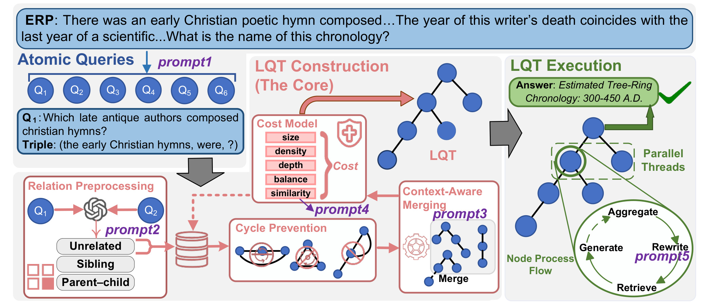
这张流程图是方法章的地图。最左侧，ERP 先通过 prompt1 被拆成 Q1 到 Q6 这样的 atomic queries；中间左侧，relation preprocessing 用 LLM 判断两两查询之间是 unrelated、sibling 还是 parent-child，并把明显 unrelated 的关系缓存下来，避免后续动态规划阶段反复调用 LLM；中间主体是 LQT construction，其中 cost model 用 size、density、depth、balance、similarity 五个维度评价候选树，同时 cycle prevention 防止构造出有环图，context-aware merging 则用部分树上下文判断局部合并是否合理；右侧 LQT execution 把树作为执行计划，节点内部做 aggregate、rewrite、retrieve、generate，并在独立节点之间并行。图中 prompt1 到 prompt5 说明 PlanRAG 仍依赖 LLM，但 LLM 的职责被拆散到不同阶段，而不是一次性生成答案。
原子查询生成阶段要求 LLM 把复杂问题拆成最小语义单元，并尽量写成类似三元组的形式。这个约束很关键，因为如果子问题本身太粗，后面的树只是把几个大块问题重新排列，无法降低噪声；如果子问题太碎，树会变深，检索和生成调用会变多。论文示例中的 ERP 被拆成“哪些是早期基督教 hymns”“哪些晚古代作者写过这些 hymns”“哪些作者在 5 世纪中叶去世”等问题，这些问题各自可以检索，但真正回答原问题时又必须被结构化组合。
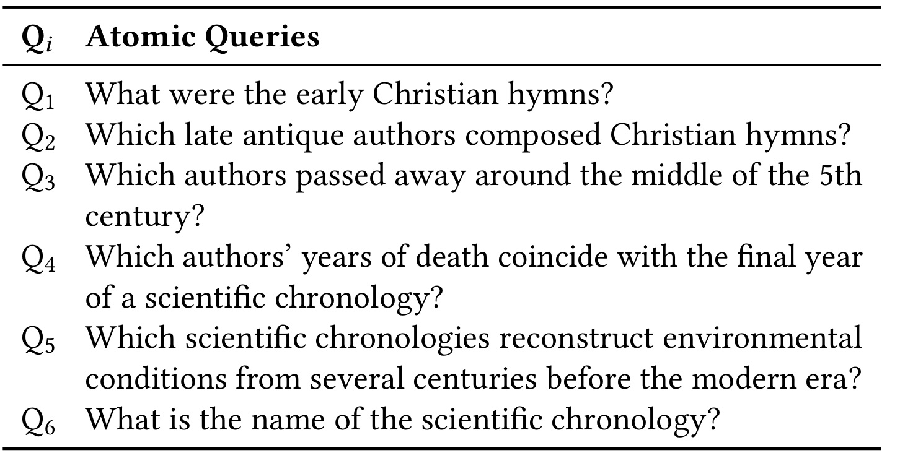
表 1 的作用是把“atomic query”落到具体文本。Q1 是早期基督教 hymns，Q2 是写这些 hymns 的晚古代作者，Q3 是中 5 世纪去世的作者，Q4 是作者死亡年份与某个科学 chronology 的最后一年重合，Q5 是重建现代以前几百年环境条件的 scientific chronologies，Q6 是最终 chronology 名称。注意这些查询不是简单顺序关系：Q1/Q2/Q3 和 Q5 可以先并行找候选，Q4/Q6 才需要把两边证据对齐。这个清单能解释为什么 PlanRAG 不满足于 ChainRAG 那样逐步问下一跳，而要先识别依赖结构；它也说明 atomic query 的质量会直接影响整棵树，因为任何漏掉的约束都会在父节点聚合时变成不可恢复的信息缺口。
2.2 用 Selinger DP 构造逻辑查询树
论文借用 Selinger dynamic programming 的思想来构造 LQT。经典数据库优化里，系统会枚举子集合的连接顺序，并根据代价估计选择更优计划。PlanRAG 把原子查询集合看作可组合对象，对每个候选子树估计成本。预备部分给出经典递推式：
符号解释：$S$ 表示当前要组织的一组原子查询，$A$ 和 $S\setminus A$ 是一次候选拆分，$C(\cdot)$ 是子计划成本，$J(A,S\setminus A)$ 是把两个子计划合并的增量成本。放到 PlanRAG 里，这个公式的直觉不是估计 I/O 或 CPU，而是让系统系统性比较“先把哪些子查询组织在一起”更合理。它避免只按 LLM 一次输出的顺序执行，也避免每次贪心地选看起来最相关的下一跳；后续的语义相似度项正是为这个递推提供自然语言计划的质量信号。
为了给自然语言 LQT 估计语义对齐，作者使用 BGE embedding 计算候选树文本化表达与原始 query 的相似度：
符号解释：$x$ 和 $y$ 是两段文本，$E(\cdot)$ 是 BGE encoder，$\langle\cdot,\cdot\rangle$ 是内积相似度。这里的相似度不是检索最终答案，而是评价“这个候选 LQT 还能不能表达原问题意图”。如果树覆盖了很多节点但偏离原始 query，或者重复拆出无关子结构，semantic similarity 会下降，成本模型会惩罚这种计划；作者接着把这个语义信号和结构信号合进同一个成本函数：
符号解释：$\mathcal{T}=(V,E)$ 是候选 LQT，$|V|$ 是节点数，$|E|$ 是边数，$\operatorname{Depth}(\mathcal{T})$ 是树深，$\operatorname{Balance}(\mathcal{T})$ 衡量子树高度差，$\operatorname{Sim}(\mathcal{T})$ 是候选树与原始 query 的语义相似度，$\alpha$ 是放大语义对齐项的系数。公式前面的负号意味着在最小化 cost 时，系统倾向于保留更多必要节点和依赖边，惩罚过深和不平衡的结构，并鼓励语义上贴近原问题的树；最终 DP 在候选结构中选择成本最低的计划：
符号解释：$\mathcal{T}^{*}$ 是在候选 LQT 中成本最低的一棵。这里必须强调论文自己的边界：这个最优性不是数据库优化中基于统计信息和物理代价的严格最优，而是启发式、LLM 驱动和语义相似度驱动的最优。因此 PlanRAG 的理论风险在于成本模型可能偏好结构好看的树，却没有完全估计真实检索难度、文档长度、证据冲突和生成成本。不过它仍比无结构链式改写更可控，因为每一步合并都有显式关系、上下文和成本记录。
2.3 以树为执行计划做聚合、改写、检索和生成
拿到 LQT 后，PlanRAG 采用自底向上的执行方式。叶子节点直接检索并生成答案，这一步对应最小可执行查询，不需要等待其他分支：
符号解释：$v$ 是 LQT 中的一个叶子 atomic query，$\operatorname{Retrieve}(v)$ 返回与该原子查询相关的证据，$\operatorname{Generate}(\cdot)$ 基于证据生成该节点答案，$\operatorname{Ans}(v)$ 是中间答案。这个公式说明叶子节点不需要等其他节点，适合并行执行；非叶子节点则要先聚合子节点的 query 和 answer，再改写当前节点并检索：
符号解释：$\operatorname{Children}(v)$ 是节点 $v$ 的子节点集合，$u$ 是其中一个子节点，$\operatorname{Ctx}(v)$ 是把子节点答案和依赖关系聚合后的上下文，$v'$ 是被上下文改写后的当前查询。这个设计把“子问题答案如何影响父问题检索”显式化：不是简单把所有历史对话塞进 prompt，而是只把树上必要的 child evidence 向上传。复杂度分析也围绕树结构展开，relation preprocessing 通过先判定 unrelated pairs 来降低 LLM 调用：
符号解释：$N_{\mathrm{DP}}$ 是 DP 构造中需要 LLM 判断的关系调用数，$p_0$ 是 unrelated pair 被正确识别并剪枝的概率，$n$ 是 atomic query 数。公式的含义是：如果 unrelated 关系能提前缓存，DP 不必在高阶子集组合中重复问 LLM，实际 LLM 使用更接近两两关系判断。执行阶段的时间由树深决定，因此树是否平衡会直接影响延迟上界：
符号解释：$d$ 是 LQT 深度，$T_{\mathrm{LLM}}$ 是平均 LLM 调用延迟，$T_{\mathrm{retrieval}}$ 是平均检索延迟；当 LQT 平衡时深度约为 $\log n$，退化成链时深度为 $n$。这也是 PlanRAG 反复强调 balance 和 parallel execution 的原因：树不是为了图形好看，而是为了让独立原子查询并行执行，并把错误传播限制在局部子树里。
3. 实验结果
3.1 WikiWeb-ERP 主结果
实验主场是 WikiWeb-ERP。作者用 Accuracy、Exact Match、Token-level F1 和 Semantic Accuracy 评估答案质量，Semantic Accuracy 由 gpt-3.5-turbo-instruct 作为 judge 辅助判断语义正确性。baseline 覆盖 DirectLLM、NaiveRAG、iteration-based 方法 RetGen/GenGround/KiRAG/DualRAG，以及 graph-based 方法 HopRAG/ChainRAG/LEGO-GraphRAG。默认 retriever 是 BM25，base model 是 LLaMA-3-8B，硬件为三张 NVIDIA A800 80GB。
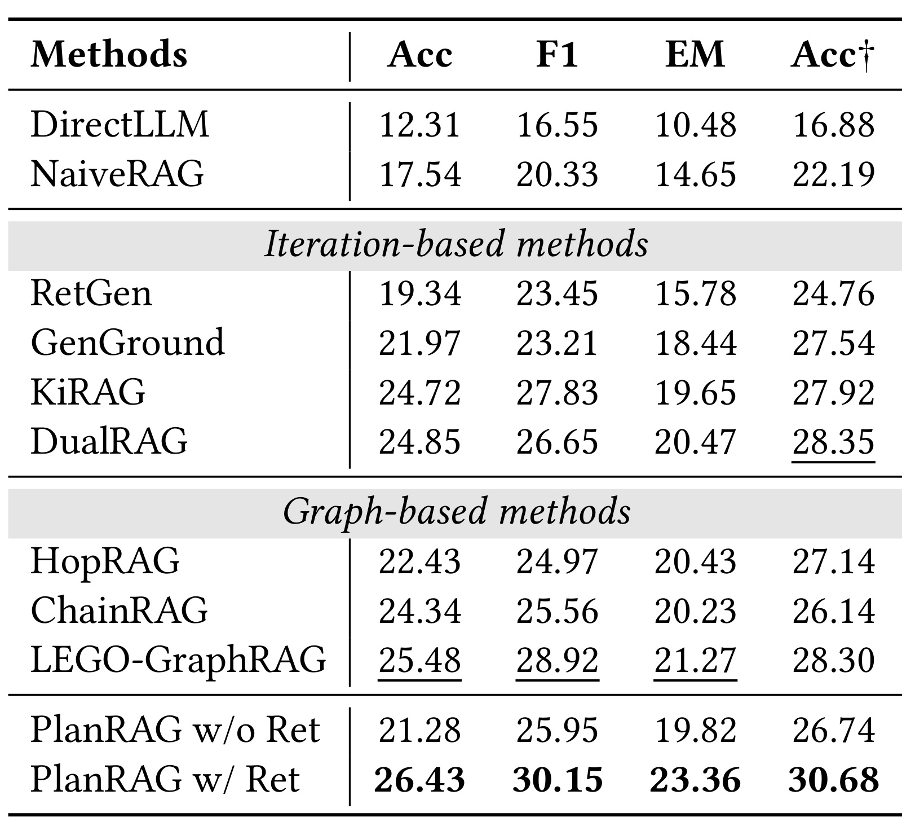
表 3 是论文最核心的结果。PlanRAG w/ Ret 在 WikiWeb-ERP 上达到 Acc 26.43、F1 30.15、EM 23.36、Acc-dagger 30.68，四项都高于 DirectLLM、NaiveRAG、迭代式 RAG 和图式 RAG。值得注意的是，LEGO-GraphRAG 在 F1 和 EM 上已经很强，说明简单说“图结构一定不行”是不准确的；PlanRAG 的优势来自它把问题本身组织成逻辑查询树，而不是只在文档图或推理图上走路径。PlanRAG w/o Ret 低于 w/ Ret，也说明结构规划不能替代外部检索，真正有效的是规划、检索和生成的组合。这里的提升幅度不算夸张到“解决 ERP”，但足够支持论文主张：在路径不确定的复杂问题上，先规划查询结构比直接把更多文档塞给模型更有效。
3.2 LQT 构造消融
主结果之后，论文用消融来回答一个更关键的问题：提升到底来自“多调了一次 LLM”，还是来自 LQT 构造里的结构约束？作者移除了 relation preprocessing、cycle prevention、context-aware merging，也逐项移除 tree size、structural density、tree depth、tree balance、semantic similarity 等成本项。
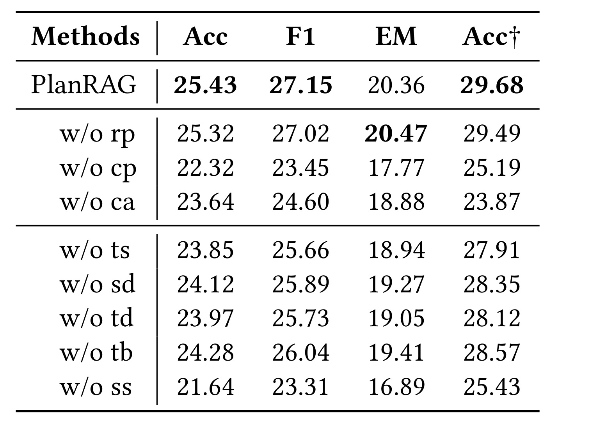
表 4 的信息量很高。去掉 relation preprocessing 对主指标影响较小，但它主要服务效率，不是最强性能项；去掉 cycle prevention 后 Acc 从 25.43 降到 22.32，说明有环或非法依赖会显著破坏计划；去掉 context-aware merging 后 Acc 为 23.64，也说明局部合并不能只看两个节点文本，必须看部分树上下文。成本模型里 semantic similarity 被移除时下降最大，Acc 到 21.64，说明自然语言 LQT 很容易构造出结构合理但语义偏离的问题。这个结果支持方法章的判断：PlanRAG 不是把原子查询随便连成树，而是要在覆盖度、依赖密度、深度、平衡和语义对齐之间折中。
3.3 跨基础模型鲁棒性
作者还检查 PlanRAG 是否绑定某一个 base model。表 5 覆盖 Llama-3-70B、Llama-2-7B、Llama-2-13B、Llama-2-70B、Qwen-2.5-7B、Qwen-2.5-14B 和 Qwen-2.5-72B。每个模型下都比较 NaiveRAG、PlanRAG w/o Ret 和 PlanRAG w/ Ret。
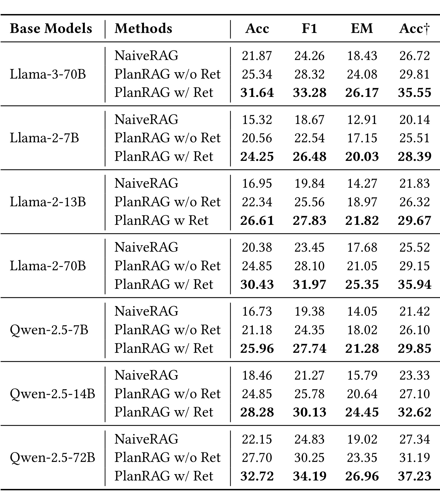
表 5 的读法不是只看哪一行最高，而是看 PlanRAG 是否在不同能力模型上都保持相对收益。可以看到，PlanRAG w/ Ret 在每个 base model 下都优于 NaiveRAG，且通常明显优于 PlanRAG w/o Ret。比如 Llama-3-70B 下 Acc 31.64，Qwen-2.5-72B 下 Acc 32.72；较小的 Llama-2-7B 也从 NaiveRAG 的 15.32 Acc 提升到 PlanRAG w/ Ret 的 24.25。这个结果说明 LQT planning 不只是强模型的 prompt trick，对较弱模型也能通过更清晰的检索路径降低任务难度。不过表中仍显示大模型本身会显著影响上限，PlanRAG 不是模型能力的替代品。
3.4 效率与系统成本
PlanRAG 的一个潜在质疑是：你引入查询规划、关系判断和动态规划，是否只是用更多调用换来更高准确率？论文用 Table 7 和 Figure 3 回答这个问题。Table 7 单独看 relation preprocessing 和 parallel execution 的效率收益，Figure 3 则把 PlanRAG 与多个 RAG baseline 的 token、runtime 和 peak GPU memory 放在一起比较。
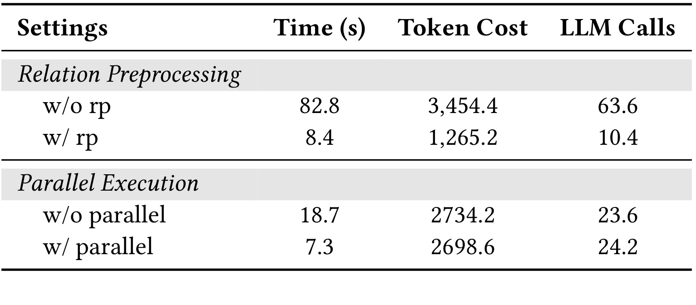
表 7 展示了两个很实用的结论。relation preprocessing 让 LQT construction 的时间从 82.8 秒降到 8.4 秒，token cost 从 3,454.4 降到 1,265.2，LLM calls 从 63.6 降到 10.4；这说明先缓存 unrelated 关系不只是工程优化，而是让 DP 可用的关键。parallel execution 则把 LQT execution 的时间从 18.7 秒降到 7.3 秒，token cost 变化很小，LLM calls 也近似不变，说明收益主要来自层级内并行而非减少工作量。对线上 RAG 系统来说，后一项尤其重要：如果并行能力不足，PlanRAG 的树结构优势会被延迟吞掉，系统只剩下额外规划成本。
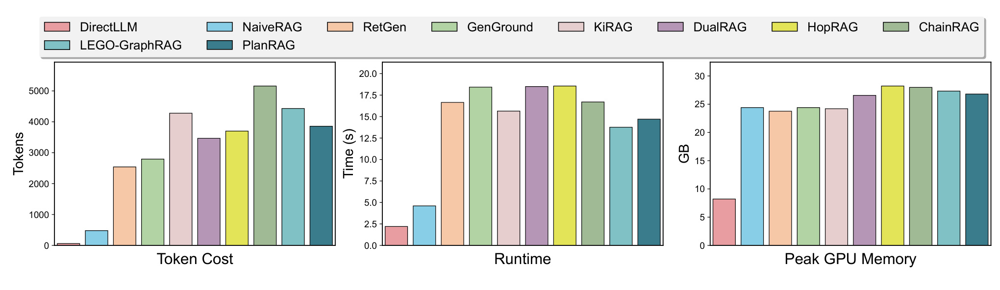
Figure 3 横向比较不同方法的 token cost、runtime 和 peak GPU memory。PlanRAG 的 token cost 不是最低，DirectLLM 和 NaiveRAG 因为工作少自然更便宜；但 PlanRAG 相比 ChainRAG、HopRAG、LEGO-GraphRAG 等复杂方法并不显得失控，runtime 和 memory 也处在可接受区间。这个图要和 Table 3 一起看：PlanRAG 用中等偏低的复杂系统成本换到了主结果表里的最高答案质量。工程上这不是“最省钱方案”，而是“在复杂 ERP 场景中更好的成本-质量折中”。如果业务问题本身很简单，论文结论部分也承认 PlanRAG 的规划机制可能没有必要。
3.5 参数敏感性与查询复杂度
成本模型里的 $\alpha$ 控制 semantic similarity 的权重。论文把 $\alpha$ 从 1 到 20 扫描，同时按 atomic query 数把问题复杂度分桶，观察不同方法随复杂度上升的退化。
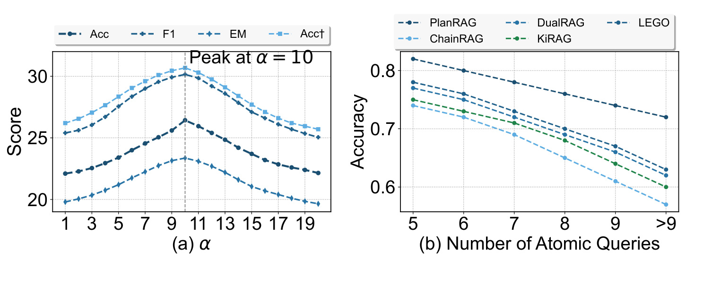
Figure 4(a) 显示 $\alpha$ 增大后性能先升后稳，在 $\alpha=10$ 左右达到峰值，再继续增大收益有限甚至略有下降。这说明 semantic similarity 需要被放大，否则 size、density、depth、balance 这些结构项会主导计划选择；但如果过度强调语义相似，也可能牺牲结构正则。Figure 4(b) 则显示 atomic query 数从 5 增加到大于 9 时，各方法 accuracy 都下降，但 PlanRAG 曲线整体更高、退化更慢。这个结果直接回应 ERP 的难点：问题越复杂，链式或图式方法越容易累积错误，而 LQT 通过结构约束和并行子树降低了部分误差传播。它也提醒调参时不能只追求单一最优点，复杂度分桶下的稳定性同样重要。
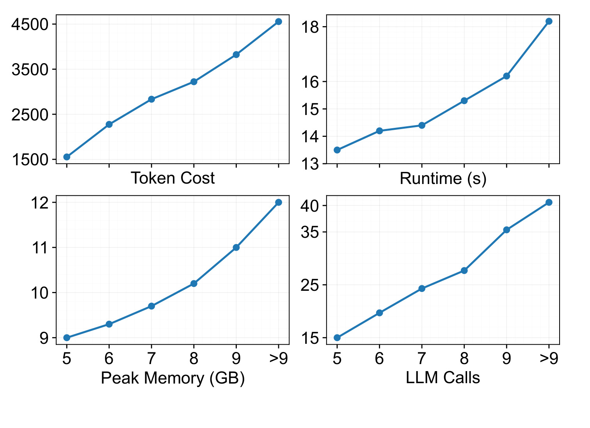
Figure 5 进一步补上系统成本侧的另一半。随着 atomic query 数增加，token cost、runtime、peak memory 和 LLM calls 都上升；尤其是大于 9 个原子查询时，LLM calls 和 token cost 增长明显。这张图提醒读者，PlanRAG 的复杂度收益不是免费的。它让执行计划更稳定，但问题被拆得越细，规划、改写和生成的总成本仍会增加。实际落地时需要设置最大原子查询数、缓存关系判断、合并低价值子问题，并根据业务延迟预算决定是否启用完整 PlanRAG。对生产系统而言，这张图比主结果表更接近容量规划：它告诉我们应该监控 atomic query 数、并发线程数、LLM 调用数和 GPU memory，而不是只看最终 accuracy。
3.6 LQT 质量与构造细节
答案指标只能说明最终效果，不能证明 LQT 真的构造得更好。论文因此加入 LQT quality evaluation：让人类和 GPT-4o 分别评价 LLM 直接生成的 LQT、去掉 semantic similarity 的方法、完整方法所生成的 LQT。
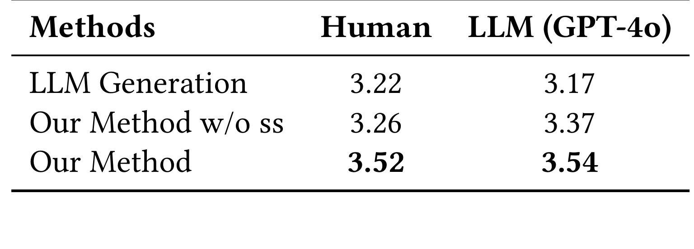
Table 9 显示，LLM Generation 的人类评分为 3.22、LLM judge 评分为 3.17；去掉 semantic similarity 后略升到 3.26/3.37；完整方法达到 3.52/3.54。这个差距不算巨大，但方向稳定，说明结构化搜索和语义相似度确实能改善 LQT 的结构稳健性。它也透露一个边界：强 LLM 直接生成计划并非完全不可用，只是稳定性和可控性不足。PlanRAG 的优势在于把一次性计划生成拆成 atomic query、relation、merge、cost evaluation 等步骤，降低随机输出造成的依赖错误；如果要在企业系统中审计失败案例，这种分阶段日志会比一个整段计划文本更可追溯。
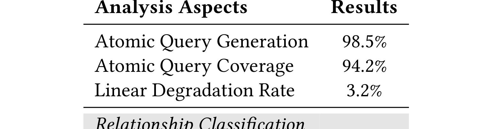
Table 10 对构造质量做了更细的拆分：atomic query generation 准确率 98.5%，atomic query coverage 94.2%，linear degradation rate 3.2%；relation classification 中 unrelated 为 96.4%，parent-child 为 83.1%，sibling 为 87.9%。这组数字很适合定位风险：原子查询本身相对可靠，树退化成近似线性链的比例也低，但 parent-child 关系判定明显比 unrelated 更难。也就是说，PlanRAG 最脆弱的地方不是“能不能拆问题”，而是“拆完之后能不能把依赖方向判准”。这也解释了为什么 Table 4 中 context-aware merging 和 semantic similarity 的消融会明显伤害效果。
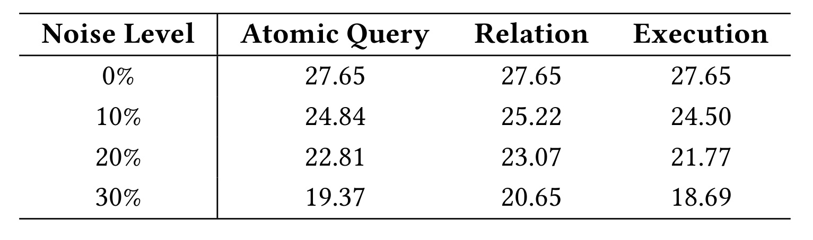
Table 11 用 controlled perturbations 测试三个阶段的错误传播：atomic query、relation、execution。0% 噪声下三列都是 27.65；噪声到 30% 时，atomic query 降到 19.37，relation 降到 20.65，execution 降到 18.69。这个表说明 PlanRAG 对上游错误有一定平滑性，但绝不是抗噪声万能。执行阶段受噪声影响最大，因为即使树结构正确，检索到无关证据或生成中合成错误仍会污染父节点。对工程实现而言，不能只优化 query planner，还需要检索器、reranker、证据过滤和答案校验一起配合，尤其要为低置信检索结果设计重试或降级策略。
3.7 案例：PlanRAG 与 ChainRAG 的执行差异
附录中的 Figure 6 用开头那个 chronology ERP 做案例，比较 PlanRAG 与 ChainRAG 的执行。这个案例很适合解释为什么树结构不是形式主义。
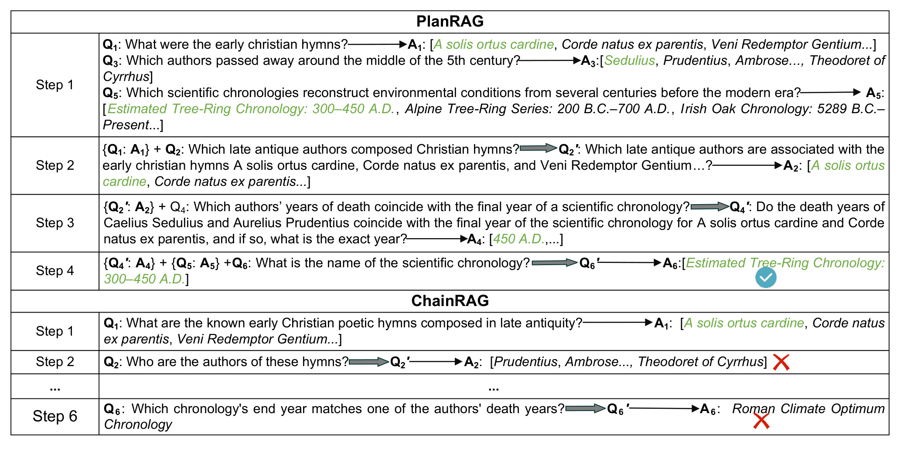
Figure 6 上半部分显示 PlanRAG 先并行处理 Q1、Q3、Q5：找 hymns、找中 5 世纪去世作者、找环境 chronology；随后用 Q1 的答案重写 Q2，再用 Q2 和 Q5 的候选去处理 Q4，最终 Q6 得到 Estimated Tree-Ring Chronology: 300-450 A.D.。下半部分 ChainRAG 采用更线性的顺序，第二步开始就把作者集合带偏，最后落到 Roman Climate Optimum Chronology。这个图的重点不是某个具体历史事实，而是错误传播形态：链式方法一旦早期实体集偏移，后面只能沿错误线索继续；PlanRAG 把可并行候选分支先保留，再在父节点做约束对齐，因此更容易保住正确路径。
整体看，实验支撑了论文的核心主张：在 ERP 上，先规划自然语言查询的逻辑结构，再执行 RAG，确实比普通 sequential rewriting 或文档图路径更稳。证据也比较完整：有新 benchmark，有主结果，有构造消融，有效率表，有复杂度分析，有 LQT 质量评测和案例。不过它仍有两个需要保守解读的地方。第一，WikiWeb-ERP 是作者构造的数据集，虽然来源混合且规模不小，但是否覆盖真实企业搜索/推荐场景还需要外部复现。第二，成本模型是人工设计的启发式函数，当前更像“结构化 inductive bias”，不是可证明最优的自然语言 query optimizer。
4. 总结
4.1 我的判断
PlanRAG 的亮点在于把 RAG 的失败点从“检索器不够强”转移到“检索前的执行计划不清楚”。这对复杂问答、deep research、agent search 和多约束推荐检索都很有启发：当用户意图含有多个模糊实体和约束时，直接检索或顺序改写都容易把早期噪声扩大；先生成 atomic queries，再显式判断依赖关系和并行关系，会让系统更容易 debug，也更容易在日志里解释为什么检索了这些证据。它不是一个轻量方案，更适合高价值、复杂、需要可解释路径的查询，而不是所有普通 RAG 请求。
我更愿意把它看成“检索前编译器”而不是普通 RAG prompt：先把自然语言意图编译成计划，再把计划交给检索和生成执行。这个角度能解释为什么论文同时关心结构质量、执行并行和错误传播。
4.2 工程启发
如果把这个思路迁移到推荐或搜索链路，我会优先关注三件事。第一，把用户 query 或任务 prompt 拆成可执行约束，不要只拆成关键词，最好能区分候选实体、属性条件、时间条件、偏好条件和最终排序目标。第二，把 relation preprocessing 做成可缓存组件，尤其是 unrelated 的判定，因为这直接减少规划调用和后续检索浪费。第三，把 LQT execution 和检索服务的并行度、超时、缓存和 fallback 绑定起来；如果服务端无法并行执行多个叶子节点，PlanRAG 的树结构优势会显著缩水。
4.3 局限和后续跟进
局限至少有四点：一是简单问题上规划成本可能超过收益，论文也承认 PlanRAG 对低复杂度场景可能退化成普通 multi-hop QA 分解；二是成本模型没有显式纳入文档长度、检索难度、证据可信度和生成失败概率，线上任务需要更细的物理执行成本；三是 parent-child 关系分类仍是明显瓶颈，83.1% 的准确率意味着不少树会在依赖方向上出错；四是代码与数据链接本轮没有独立核验，复现成本、prompt 细节和 benchmark 构造偏差还需要后续检查。后续我会跟进公开仓库是否可访问、WikiWeb-ERP 的样本构造是否有泄漏或模板化问题、不同 retriever 和 reranker 下是否仍然保持收益，以及能否把 cost model 学习化或接入真实检索统计。对推荐系统方向，还值得试一个小型原型：把复杂商品/内容搜索 query 拆成 LQT，用并行召回和证据聚合替代单链路改写，看它是否能降低长尾意图的召回噪声。